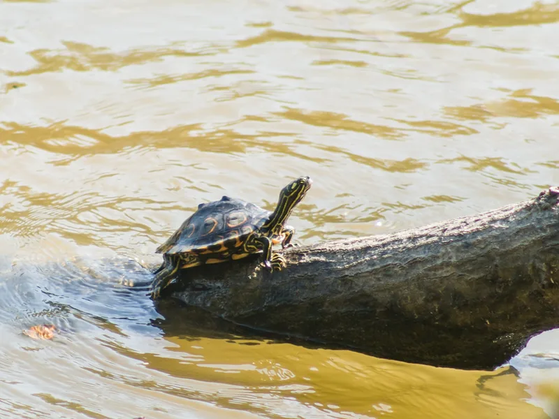

ミシシッピ州パールリバー水系に固有分布する小型チズガメ。甲羅に黄色いリング状の模様があることが名前の由来。CITES掲載はないが米国内で保護対象となる希少種。

1年後の甲長は7〜10cm程度（オス）。ミシシッピ州パールリバー水系のみに生息する固有種で、脊稜に走る輪状のリング模様が個性的。清澄な流水環境を好み、水流のある水槽で活発に泳ぐ姿が観察できる。CB個体のみが取引可能なため、入手ルートの確認が必須。
10年後、オスは甲長11〜13cm程度のまま。メスは18〜22cmに成長する場合がある。固有種のため流通量が極めて少なく、CB個体を大切に飼育する意識が重要。15〜30年の寿命があり、清澄な水質と水流の維持が飼育の核心になりやすい。
ワモンチズガメはミシシッピ州の特定河川のみに生息する固有種で、一般的なチズガメより水質への要求が高い傾向がある。「チズガメ属の管理と同じ」という前提では、固有種特有の清流型の管理要件を見落としやすい。強力なろ過と定期換水を組み合わせた清澄な水環境の維持が、この固有種の安定飼育への核心になりやすい。
ミシシッピ州パールリバー水系のみに生息する固有種。米国国内では保護対象のため野外採集は禁止。CB個体または合法輸入個体のみ取引可能。流水・高水質を好む。
流水と高水質への依存が強い。週2回の部分換水と強めのフィルターが必須です。水質が悪化すると体調を崩しやすい種です。
← 横にスクロールできます
| 種名 | 甲長 | 難易度 | 必要環境 | 特徴 |
|---|---|---|---|---|
| ワモンチズガメ このページ | オス9/メス18cm | 上級 | 45〜90cm | 本種・固有保護種 |
| クロコブチズガメ | オス10/メス18cm | 中〜上級 | 45〜90cm | こぶ模様 |
| ミシシッピチズガメ | オス8〜12/メス22cm | 中級 | 60cm〜 | 定番チズガメ |
| フトマユチズガメ | オス10/メス22cm | 中級 | 60〜90cm | 流水好み |